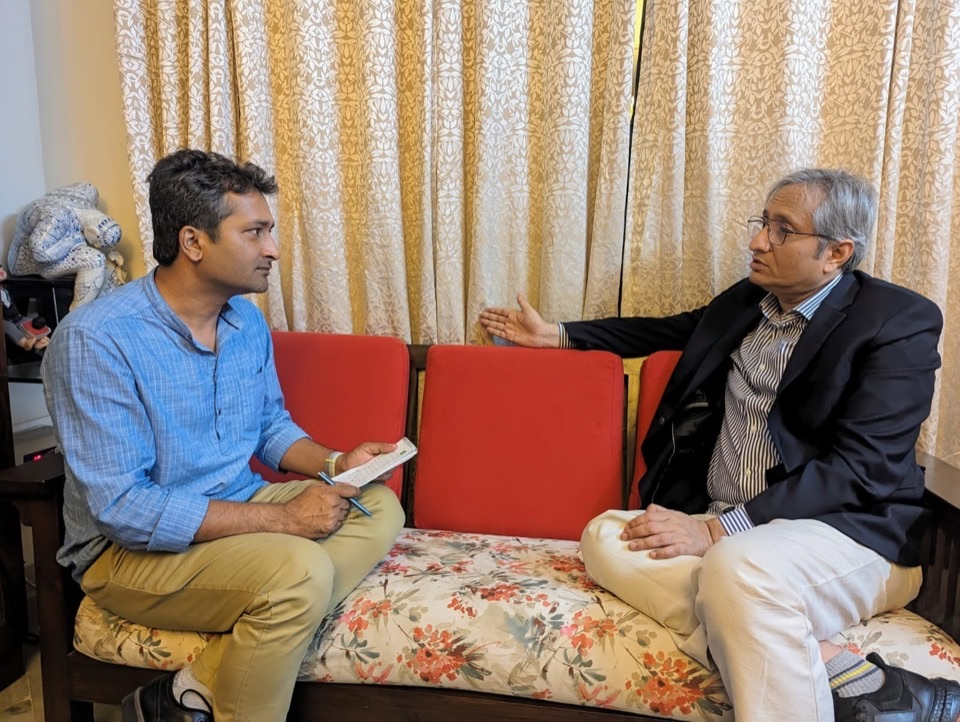
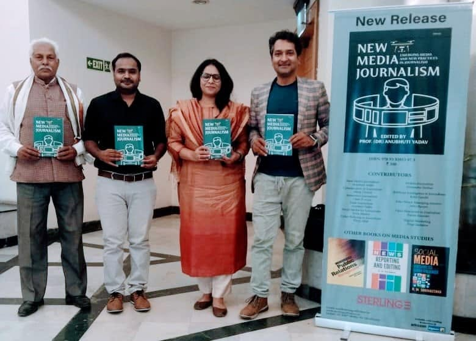

Investigative Reporters and Editors (IRE) Conference — Anaheim, California
PanelistHow can investigative journalists hold political actors accountable in an era of rising autocracy, political violence, AI-driven disinformation, and other anti-democratic threats in this seismic global elections period? In this round-up session, journalists shared the key tools, strategies, and techniques that leading watchdog journalists around the world now recommend, from at-risk elections to "hybrid" democracies and autocratic states holding sham elections.
View session →Asia–Europe Foundation (ASEM) Journalists' Seminar — Madrid
SpeakerRepresented India as the sole invited journalist from the country and shared my insights on the dangers of misinformation in a highly polarised society amid fading public trust in legacy media with selected groups of young journalists from across Asia and Europe.
Interview with Ravish Kumar
ICFJ's Disarming Disinformation ProjectInterviewed Ramon Magsaysay Award winner Indian journalist Ravish Kumar for my investigative project as part of ICFJ's Disarming Disinformation programme in 2024.

Book Launch
IIMC (Indian Institute of Mass Communication)At the unveiling ceremony of the book 'New Media Journalism: Emerging Media and New Practices in Journalism', in which I contributed the chapter 'Fake News, Misinformation and Disinformation: Tackling the Menace'.
